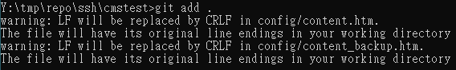
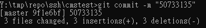
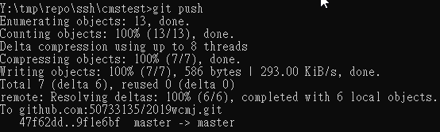

近端配置與管理 <<
Previous Next >> 擲骰子遊戲
倉儲改版
建立Git倉儲，並克隆倉儲至近端工作後，對遠端倉儲改版
可攜程式系統中已經內建git，可以在啟動start.bat後，透過路徑的設定，直接執行git指令。
建立Git倉儲，共分為兩類，一類是直接在Github網際介面下建立倉儲時，要求建立README.md檔案，之後可以直接在近端，以git clone加上倉儲連線URL，將倉儲克隆一份到近端，並以最新版本作為工作目錄，使用者改版後，可以直接透過git add，commit與push對遠端倉儲改版。
另一類則是故意在Github網際介面下建立倉儲時，不要建立任何檔案，而是在近端自行利用git指令建立倉儲架構，新增內容後，以git remote add設法在近端倉儲中納入起源URL後，將近端倉儲版本新增提交推送到遠端。
git add

git add可以用來新增一個檔案，數個檔案，或在之前提交後所新增的所有內容。
git add在GIT架構下，是對所新增或修改的內容拍快照：
git add。將當前目錄和所有子目錄中的所有已修改和新（未跟踪）文件添加到暫存區域（也稱為索引），從而使它們準備好包含在下一個git提交中。git add
git commit 將忽略與.gitignore文件中的模式匹配的任何文件

git commit執行之前，必須使用git config建立臨時或永久的身分註記，因為GIT在展開所有改版內容時，必須明確登錄這些變更的作者與時間。
當使用者採用git commit -m“改版說明訊息”，此次提交到.git目錄下的更動內容，均會綁定使用者身分與改版所輸入的說明訊息。
git push

git push在隨後沒有輸入遠端URL代號時，表示要推送到origin，若透過git remote add設定其他代號與URL對應時，git push加上代號，就可以將此次的提交內容，推送到指定的URL所在遠端倉儲。
靜態CMSimfly
利用CMSimfly（https://github.com/chiamingyen/cmsimfly）內容，建立自己的Github Pages網站
設法利用HTML5 CSS與Javascript，納入與機械設計相關的靜態網頁內容
近端配置與管理 <<
Previous Next >> 擲骰子遊戲